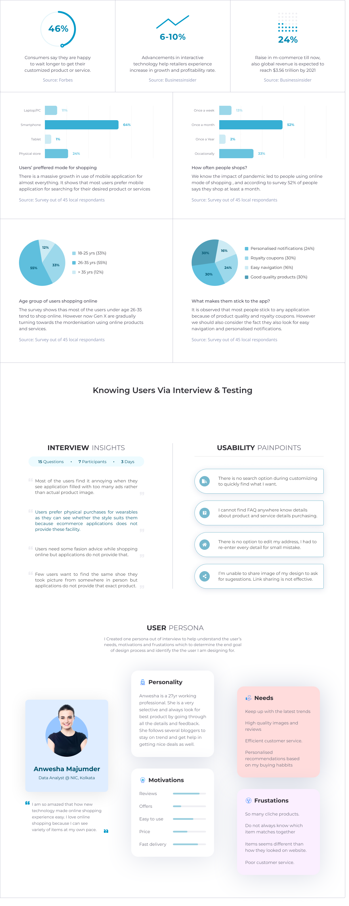

Amina Nasrin
USER EXPERIENCE DESIGNER


Enlivening the customized shopping experience of Toesmith
A whole new Customized shopping experience for the e-commerce footwear brand.
hide
hide
hide
Conceptual Project | 5 min read


Small disclaimer, I’m not affiliated with Toesmith in any way, and the vision for this case study are strictly my own. This case study was done to enhance my design skills and challenge myself to explore better design decisions that serve the purpose of intuitive user experience.
| Scope | Duration | Member | Tools |
|---|---|---|---|
| Mobile app | 4 weeks | Sole handler | Figma, |
| Concept project | (Feb 2021) | research & designs | Photoshop |
TOESMITH
Ever since the popularity of Customization took over the market, startup industry spark off innovative ways to bring value to the their customers.
Toesmith is a fashion tech startup that brings 3d interactive design tool that lets us customize different parts of shoe (even by uploading their own designs)
How it Started
One of the key reason that made me think of designing Toesmith app was the fact that they do not have mobile application (currently supports website) to give seamless user experience. And according to google: A well-designed mobile app can perform actions much quicker than a mobile website.
MY GOALS
Project goals
- Providing reliable user experience & intuitive user interface
- To cater user centric functionalities keeping in mind consistent business objectives
- To increase user engagement with the application.
Personal goals
- Enhance my design thinking by taking up challenging obstacles and improvising relevant solution.
- Getting polished with the User research, user experience & interface approach towards creating an entire product.
- Being able to perform critical decision making.
Motivations
- The website brought an innovative way to get customized designer shoes but not having mobile app to get ease of use.
- Although the mobile web version exist, I felt it needed some asthetic flows in some critical screens for more user engagement.
THE APPROACH
Project Stages
My approach towards this project took place via multi-phase iterative design cycle. The project was simulated taking the double diamond approach at various stages to create uniqueness that will distinguish Toesmith with market full of intuitive apps.
SET OBJECTIVESSetting goals in the beginning scale up the process towards practical way of improving the design |
SET OBJECTIVESSetting goals in the beginning scale up the process towards practical way of improving the design |
SET OBJECTIVESSetting goals in the beginning scale up the process towards practical way of improving the design |
SET OBJECTIVESSetting goals in the beginning scale up the process towards practical way of improving the design |
SET OBJECTIVESSetting goals in the beginning scale up the process towards practical way of improving the design |
SET OBJECTIVESSetting goals in the beginning scale up the process towards practical way of improving the design |
SET OBJECTIVESSetting goals in the beginning scale up the process towards practical way of improving the design |
SET OBJECTIVESSetting goals in the beginning scale up the process towards practical way of improving the design |
THE RESEARCH
Site Analysis
I initial did analysis of Toesmith site myself to validate the points after user testing. Since the mobile web version exists I decided to first perform an in dept analysis regarding functionalities, architecture and navigations so that my app design should not breach the brand identity. However I found quite a few usability issues.
THE DISCOVERY
User Insights
Desk research and topic study was important for me to make it clear that “why do I need to design an app” . Along with that a a survey with 45 respondants brought useful demogarphics that led me in right direction while working on this project.
THE SOLUTION
To Create Engaging & Advanced User Interactions
Keeping in mind the insights, feedeback & pain points and compiling them helped me brainstrom ideas to create potential solution for users while keeping the business objective in mind. I decided to prioratize the basic needs of user for any application to be performed and worked on that.
THE VISUALS
Overall structure of the application
To keep the flow intact an architechtural overview is the most important step to be followed in a design process. Hence I created the Information architechture for the app features and initial rough wireframes to define usability of the application while designing visuals.
THE SKELETON
User Interface Designs
Before moving forward it was important to keep the design system ready to make asthetic visual application. I followed brand color of Toesmith with few additions to the new features keeping the look and feel intuitive.

LETS EXPLORE THE APP NOW
User Onboarding
INTRODUCTION TO APPLICATION
The app opens with animated introductory screens where
the main features are been describes for easy understanding

Customizing screen
EDIT YOUR DESIGN
The screen opens with default selection of pattern with type to search for.

Purchase process
CHECKOUT & PAYMENT SCREENS
For purchase option there are two scenarios each for first time user and already registerd users
SCENARIO TWO
Users who have already added details can continue to pay or choose to add or modify their details.
USER TESTING